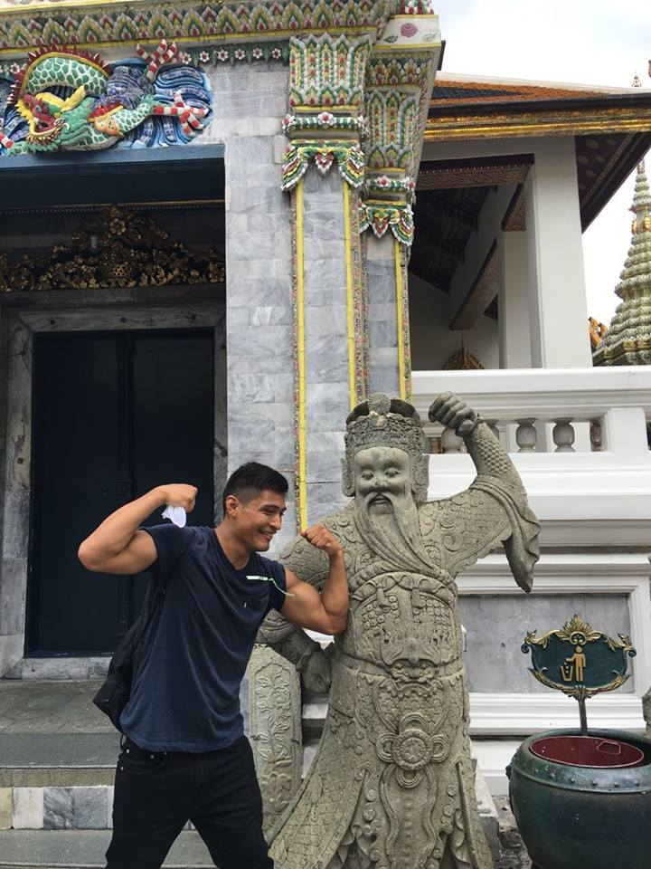

Hi all, my name is Steve Santos and I'm a current student at Epicodus. I am 24 years old and just moved into Seattle last week! I look forward to making the most of my oppurtunities while I'm here, in both the school I'm enrolled at and the City of Seattle. This city offers one of the best technoloy in the USA, second to Silicon Valley, and I should fully take advantage of the amount of networking I can do while being here.
Growing up in San Jose, CA I was no stranger to innovation. That one day of the year where kids parents would come in to explain what they did for work, it was almost always people working in technology whether it'd be from manufacturing all the way to engineering, we were always getting the latest updates of what technology was recently made. I then moved to Colorado at the age of 10 and ended up spending the remaining 14 years there. In Colorado I became active in sports and my competivness always made me work harder to reach my goal of winning. I just hated losing, in fact I found no fun when we lost. My sixth grade year I wanted to try something new, so I tried wrestling. That year I went with zero wins and a large amount of losses. After the season I told myself I'd be better the following year so I tried a new approach when the season came around; I started lifting weights. It helped but my conditioning wasn't there that season and I still lost but at least I had a couple wins racked up, a small improvment. So finally when my eighth grade year came around I decided to prepare ahead of time to be ready for the season. I lifted weights and ran everyday until the season started and even wrestled around with my friends during the offseason in our backyards. Finally, the third year came around and I ws beating everybody. I ended up going to state and lost one match which would have qualified me to wrestle for first place if I didn't lose. My love for being physically active didn't end there even when I moved to Peru. Although my wrestling career was over, because Peru offered no wrestling, I continued to run up and down the beaches, play soccer, and even played basketball. Soccer was never really my sport but I enjoyed the competition. Basketball was a sport I enjoyed playing as a kid, only pick-up games since my parents were broke. After high school I kept up with being physically active while working full time in the pharmaceutical industry. I was the operator who mixed all raw material together and ran it into a press where they were compressed into tablet form. I took college level classes here and there for the six years after high school and decided maybe I should just soley focus on one realm instead of focus on a varitey of subjects while working. This was the reason for my move to Seattle to attend Epicdous full time.
I considered dropping out of high school many times as a teenager, my surroundings weren't always my best influences, but I'm glad I stuck through it, even if it meant doing an extra year in High School. When I managed to get through high school as a super senior, I decided to enroll in two college courses even though I was working full time. Every college semester from there was the same, enrolled in one or two classes at Front Range Community College in Colorado, until I finally had enough credits to transfer to the engineering program at the University of Colorado. My first semester there was my last, after enrolling in two classes, I learned that college can be expensive and seeing that I had half way to go, I might never be able to break that hole of being broke. This is where I decided to attend Epicodus in Seattle. It was an institution where I can soley focus on coding full time without any other responsibilities. I wouldn't have to pay as much as what I would have paid for the remaining couple of years at CU. Below is a list of websites I've already created at Epicodus. This is only the first week so they're not websites that are at 100 percent yet but they have the potential to be and at least I've been getting the practice by only focusing on this throughout the week.
Getting a four year degree is nice and beneficial in many ways, but I still had long ways to go if I was to complete my degree. I had 58 credit hours to my degree, but I had 70 left for my Bachelors in Computer Science. I was also working full time making it difficult for me to only focus on one subject. It was hard waking up at 5 every morning, and work until 3 pm, then go to class and study until 11 or 12 at night. It was becoming exhausting and there were a lot of classes in my degree that in reality, I would probably never use in my career. I also looked at the rate it was taking me to complete my degree, and the forecast was not in my favor. This is where I decided taking a six month course over potentially another 4-6 years to complete my degree would be a better idea.
But is a coding botcamp really better than a four year degree? Coding bootcamps are around 3 to 6 months long, intensive, teach you very practical, applicable, up-to-date skills, and give you career coaching, but are not usually accredited, so you do not get a qualification. If you attend a coding bootcamp you will need to prove your skills through your portfolio. CS degrees are around 4 years long, cover in-depth theoretical material, teach you established programming practices, and provide you with a degree to show for it, but you will still need to prove your skills in a technical interview. Coding bootcamps cost between $6,000-$20,000 all up front, whereas CS degrees can cost up to $20,000 per semester. All in all its up to the individual to decide what best fits their need.
In my scenario I'm already halfway done with the degree but I want to accelerate my programming skills and possibly start my career after the program. If worst comes to worse, I can always fall back to my uncompleted degree and attempt to complete it. Hopefully that's not the case and I find a job web or software devolopment job after this program at Epicodus.
There are a list of things I enjoy doing. I'm physically active, I enjoy live music, and I'm a problem solver. I enjoy going to festivals to see my favorite artists or upcoming artists on the rise. I also enjoy doing anything that involves exercise whether it's rock climbing a mountain or running aroun my community. I've always enjoyed working with puzzles as a kid and until this day, I still do. It gets addicting to the point whereif I can't solve it, I stay up until its done.